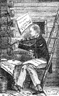

The Music of Anthony Philip Heinrich | |
|  | |
(1781-1861) | |
|
Anthony [Anton] Philip Heinrich (b. 11 March 1781 in Shonbuchel, Bohemia; d. 3 May 1861 in New York, NY), America's self-proclaimed loghouse composer, first came to America in 1805, settling in Philadelphia, after his wife died in 1814. He later moved to Kentucky, in Louisville, and later to Bardstown. He went to London in 1827 and returned to America by 1832. He then returned to Europe in 1834. He returned to America in 1838 and worked in and around New York from then until 1861. He was called the Beethoven of America in 1823 by the Boston writer John Rowe Parker. He had a daughter named Antonia. Read contemporary comments about Heinrich by John Hill Hewitt. A major source for Heinrich's music is Kallisti Music Press. I am pleased to have so far helped draft submissions for the publisher's Editorship of the following Heinrich published books:
Another website devoted to Papa Heinrich is here and features sections for a Biograph, Compositions, Critical Analysis, Bibliography and a Discography. |
The Dawning of Music in Kentucky,
|
||
Title |
Words |
Sources/Comments |
|---|---|---|
A Bottle Song (Six Bumpers, An Overflowing Bumper, Postscript-- or a Health to Amateurs, Valso Cantante) |
pp. 41-51 |
|
A Chromatic Ramble, of the Perigrine Harmonist |
Heinrich? |
pp. 135-145 |
A Divertimento for the Piano Forte (Farmington Minuet, Farmington Allemande, Farmington March) |
none |
pp.169-173 |
Avance et Retraite (Military Waltz) |
none |
p. 119 |
Canzonet |
William B. Tappan (from Songs of Judah) |
p. 191 |
Coda [from Heinrich's Songs, Vol. I, Kallisti Music Press edition. Used by permission] |
pp. 146-147 |
|
| Columbia's Plaint | Henry C. Lewis | pp. 95-96; 012/056@Levy |
Empress's March (from The Minstrel's Petition) |
none |
pp. 245-250 |
none |
p. 56 |
|
Farewell to Farmington (Cotillion) |
none |
p. 180 |
Five Minuets (The Imperial, The Royal, The Illustrious, The Affable, The Philanthropic) |
none |
pp. 227-232 |
From Thee Eliza I Must Go (Song) |
Robert Burns, 1759-1796 |
p. 175-179 |
God Save the Emporer (subject by J. Haydn) (Tema + 5 Var.) (from The Minstrel's Petition) |
none |
pp. 219-226 |
Hail Columbia (Minuet) |
none |
pp. 71-73 |
Hail to Kentucky |
P. Grayson Esqr. |
pp. 11-18 |
How Sleep the Brave (Vocal+pno; and Harmonized for Three Voices) |
pp. 77-79 |
|
Kentucky March (Trio & Quickstep Waltz) |
none |
pp. 61-66 |
La Buena Mattina (Sonata for the Piano Forte) |
none |
pp. 25-39 |
Lord Byron's Cotillion (an Extract from The Fair Haidee, a song written by that eminent English bard) (Performed as a Solo dance in the musical Melo Drama of the Child of the Mountain) |
none |
p. 55 |
March Concertante (adapted to the Piano Forte, intended for full orchestra) |
none |
pp. 197-213 |
Marcia di Ballo (Marcia Brioso, Rondo Fanfare) |
none |
pp. 157-163 |
Ode to the Memory of Commodore O. H. Perry (Requiem) (plus Epitome) |
Henry C. Lewis |
pp. 91-94 |
pp. 4-9 |
||
Say What Is That Heart! (Song) |
pp. 181-186 |
|
Sensibility's Child (Song) |
pp. 99-100 |
|
Sensibility (Song [Duet]) |
pp. 97-99 |
|
Serenata (A Seranade) (Adapted for the Piano Forte) |
none |
pp. 19-24 |
pp. 150-152 |
||
Sweet Maid (Song) |
pp. 164-165 |
|
Tema di Mozart and an Original Air (Varied for the Violin with Accompaniments) |
none |
pp. 121-134 |
The Affable (Minuet) (from Five Minuets) |
none |
pp. 230-231 |
The Austrian (A Landler) |
none |
pp. 85-90 |
The Birthday of Washington (A Patriotic Ode) |
Anon. from the National Intelligencer |
pp. 232-237 |
pp. 193-195 |
||
pp. 102-103 |
||
The Fair Bohemian (Cotillion) |
none |
p. 81 |
The Fair Traveller (or the Post-Ride from Prague to Vienna) (Descriptive Waltz) (from The Minstrel's Petition) |
none |
pp. 238-245 |
The Henriade (Cotillion) |
none |
pp. 196 |
The Illustrious (Minuet) (from Five Minuets) |
none |
pp. 229-230 |
The Imperial (Minuet) (from Five Minuets) |
none |
pp. 227-228 |
The Minstrel's Petition, or a Votive Wreath(contains:)God Save the Emperor! Five Minuets (The Imperial, The Royal, The Illustrious, The Affable, The Philanthropic) The Austrian—A Landler The Fair Traveller Emperess's March |
none |
pp. 216-250 |
The Musical Bachelor [Version 1] |
A Gentleman of Kentucky (J. R. Black Esq. of Shelbyville, Ky.) |
pp. 67-70; also from Songs, Vol. V (Philadelphia: Kallisti Music Press, 2003), page 61-64 |
The Musical Bachelor [Version 2] |
A Gentleman of Kentucky (J. R. Black Esq. of Shelbyville, Ky.) |
pp. 66; also from Songs, Vol. V (Philadelphia: Kallisti Music Press, 2003), page 65 |
The Philanthropic (Minuet) (from Five Minuets) |
none |
232 |
None |
pp. 80 |
|
The Royal (Minuet) (from Five Minuets) |
none |
pp. 228-229 |
The Sarah (Cotillion) |
none |
p. 192 |
The Sons of the Woods (An Indian War-Song) |
Henry C. Lewis |
pp. 153-156 |
The Unamiable (Cotillion) (plus A German Hopsassa Dance and An Allemande) |
none |
pp. 82-84 |
The Yankee Doodleiad (A National Divertimento) |
none |
pp. 254-269 |
The Young Columbian Midshipman (Waltz Song) (contains Vivo!, Epitome) |
pp. 52-54 |
|
Three Cotillions (Luciade, La Primavera, Il Brilliante) |
none |
pp. 166-168 |
To the Air of Hail Kentucky |
Heinrich? |
pp. 9-10 |
Visit to Farmington |
none |
p. 101 |
p. 114 |
||
pp. 188-189 |
||
Yankee Doodle, Waltz |
none |
pp. 74-76 |
The Western Minstrel, |
||
Title |
Words |
Sources/Comments |
|---|---|---|
Gypsy Dance |
none |
p. 27 |
William B. Tappan (from Songs of Judah) |
pp. 2-3 |
|
Image of My Tears |
Henry C. Lewis |
pp. 25-26 |
Irradiate Cause! |
William B. Tappan (from Songs of Judah) |
pp. 24-25 |
Landler of Austria (a rustic Waltz) |
none |
p. 16 |
pp. 34-35 |
||
pp. 11-12 |
||
O Smile Upon the Deaf & Dumb |
William B. Tappan (from Songs of Judah) |
pp. 33-34 |
Philadelphia Waltz (an extract from Visit to Philadelphia) |
none |
p. 3 |
pp. 4-5 |
||
Sailor Boy's Dream |
Dr. Diamond |
p. 32-33 |
The Minstrel's March, or Road to Kentucky |
none |
pp. 36-39 |
The Musical Bachelor [Version 3] |
J. R. Black Esq, of Shelbyville, Ky. |
pp. 14-16; also from (Philadelphia: Kallisti Music Press, 2003), pp. 66-68 |
Anon. German; trans. By Paul Grayson Esq. |
pp. 6-7 |
|
There Is an Hour of Peaceful Rest |
William P. Tappan from New England and Other Poems |
p. 17 |
pp. 12-14 |
||
Where Are the Pleasures of Life [from Heinrich's Songs, Vol. I, Kallisti Music Press edition. Used by permission.] |
pp. 22-23 |
|
The Sylviad; or Ministrelsy of Nature |
||
Title |
Words |
Source/Comments |
|---|---|---|
The Minstrel's Catch, or Canone infinitum (A Lay, from 8 to 40 Voices, more Adlibitum, or A Medium between) |
No. 1, pp. 3-6 |
|
none |
No. 2. pp. 7-14 |
|
Canone Funerale, An American National Dirge |
none |
No. 3, pp. 15 |
None |
No. 4, p. 16 |
|
William B. Tappan, Esq. |
No. 5, p.. 17-20 |
|
The Minstrel's Musical Compliments to Mrs. Coutts, a Fancy Cotillion: Vivat Britain's Fair! |
None |
No. 6, pp. 21-27 |
A Divertimento di Ballo |
none |
No. 7, pp. 28-34 |
The Sylviad; or Ministrelsy of Nature |
||
|---|---|---|
Title |
Words |
Source/Comments |
Overtuer de la Cour (Intended for the Orchestra) · Polonaise de la Cour · Fantasia alla Polonaise |
none |
No. 1, pp. 40-80 |
Toccata grande cromatico · Gran Toccata cromatico · Interludio semplice · Intermezzo variato · Finale o Fantasia tripolata |
none |
No. 2, pp. 81-108 |
none |
No. 3, pp. 109-122 |
|
Overture to the Fair Sylph of America, Miss Eliza Eustaphieve · Original Address of the Minstrel · The Stranger Friend · Overture to the Fair Sylph · Alla valse |
No. 4, pp. 123-152 |
|
The Minstrel's Entertainment with His Blind Pupil |
|
No. 5, pp. 153-177 |
The Yager's Adieu |
Heinrich (in German); English translation by Paul Grayson |
No. 6, pp. 178-196 |
Where Is the Nymph (from Moore's Melodies) |
No. 7, pp. 197-201 |
|
The Minstrel's Catch, or Canone infinitum (new version of set 1, no. 1) |
Heinrich? |
No. 8, pp. 203-206 |
The Four Pawed Kitten Dance, a Musical Jest for the Piano Forte |
none |
No. 9, pp. 207-212 |
Fill Your Goblets, a Chorus Song |
H. McMurtrie, Esq. |
No. 10, pp. 214-215 |
Epitaph on Joan Buff |
William Stanton |
No. 11, pp. 216-230 |
none |
No. 12, pp. 235 |
|
Bernard, Duke of Saxe Weimar's March |
none |
No. 13, pp. 237-240 |
The Sylph of Music, or Euterpe's Resignation |
C. H. Locke |
No. 14, pp. 241-243 |
Where's the Home, or Exile's Reflection |
C. H. Locke |
No. 15, pp. 245-248 |
Mary (and Polly's Consolation, or a Travesty on the preceeding Lament) |
No. 16, pp. 249-253|4-8 |
|
The Minstel's March to the Woods |
none |
No. 17, pp. 259-264 |
A Sylvan Scene of Kentucky, or the Barbecue Divertimento, Comprising the Ploughman's Grand March and the Negro's Banjo Quickstep |
none |
No. 18, pp. 265-287 |
The Log House, a Sylvan Bravura (Il Malinconico, L'Entusiasta, Il Romantico) |
No. 19, pp. 289-310 |
|
The Minstrel Adieu |
C. H. Locke |
No. 20, pp. 311-314 |
none |
No. 21, pp. 315-318 |
|
Sequel, or Farewell to My Loghouse (A Song; and Harmonized for Four Voices) |
Heinrich |
No. 22, pp. 319-324 |
none |
No. 23, pp. 326-327 |
|
The Western Minstrel's Musical Compliments to Mrs. Coutts |
Heinrich (in German); translated by Paul Grayson) |
No. 24, pp. 329-344 |
Vivat Britain Fair! a Wedding Reel |
none |
No. 25, p. 345 |
The Western Minstrel's Recollection of the Wilderness of Kentucky, or a Vocal Fantasia |
Miss Ann Gibbon Whipple of Gardner, Maine |
No. 26, pp. 347-357 |
Bohemia, A Sacred Melody |
No. 27, pp. 358-359 |
|
Works of Known Dates |
||
|---|---|---|
Title |
Words |
Source/Comments |
| 1827 | ||
| Be Silent Now | W. Steele | manuscript |
| Dean Swift's Retreat | Swift | man. |
| Fasntasia vocale | John Howard Payne | manuscript |
| I Love the Brilliant Courtly Scene | T. Gaspey | man. |
| The Absent Charm (A canzonet) | Thomas Gaspey Esqr. | London: T. Welsh, No. 3584 |
| The Twin Brothers (2 settings) | L. E. Landon | manuscript |
| The Twin Sisters (2 settings) | W. Steele | manuscript |
| 1828 | ||
| Avance et retrait (military overture) | none | London: Clementi, Collard &Collard |
| Be Silent Now Ye Merry Strains (cantata) (ca. 183-) | W. Steele, Esq. | London: Clementi, Collard &Collard |
| 1829 | ||
| 1830 | ||
| The Absent Charm (Canzonet) (Song) | Thomas Gaspey, Esq. | @LoC |
| Be Silent Now Ye Merry Strains (Cantata) [ca. 1830s] | W. Steele Esq. Poetry of the Coda by Frederick Crouch | @LoC |
| 1831 | ||
| Funeral Anthem No. 1 (chorus of men and boys with org. or pno.) | Heinrich | Philadephia: Kallisti Music Press |
| Storia d'un Violino (violin solo) | none | Philadephia: Kallisti Music Press |
| 1832 | ||
| Antonia (SATB with Organ) (from National Church Harmony) | Heinrich? | @LoC |
| Hail Beauteous Spring! (A Song and Chorus) [1 Jul] | William B. Tappan | 1832-360480@LoC |
| I Love Thee! | T. hood | man. |
| Nay, Lady | N. Greene | man. |
| Paganini's Incantation (with Thomas Welsh) (founded on the Italian air The Witches Dance) | none | 034/045@Levy |
| Song of Jacob to Rachel [1v, org] | Tappan | man. |
| The Voice of Faithful Love [1v, fl, pf] | Gaspey | man. |
| We Wander in a Thorny Maze | Tappan | man. |
| 1832 | ||
| 1833 | ||
| 1834 | ||
| 1835 | ||
| 1836 | ||
| The Harper of Kentucky (orch.) (ca. 1836) | none | Philadelphia: Kallisti Music Press |
| 1837 | ||
| The Columbiad---petite fantasie (Chamber orch.) | none | Philadelphia: Kalisti Music Press |
| The Tower of Babel (chamber orch.) | none | Philadephia: Kallisti Music Press |
| 1838 | ||
| The Bonny Brunette (Song) (2 versions) | John M. Moore Esq. | New York: James L. Hewitt |
| 1839 | ||
| A Paean to Apollo: No. 1 Exordium, No. 2 Invocation, No. 3 Incantation, No. 4 Cadenza: Adoration of the Muses (for Orch.) | ? | @LoC |
| 1840 | ||
| 1841 | ||
| 1842 | ||
| The Loved One's Grave | William Wordsworth | man. |
| The Wildwood Spirit's Chant (orch.) | none | Philadephia: Kallisti Music Press |
| 1843 | ||
| 1844 | ||
| Texas and Oregon Grand March for the Pianoforte | none | New York: C. G. Christman |
| 1845 | ||
| The Adieu (from The Wild Wood Spirit's Chant; or, The Pilgims to the New World) [3 versions: (1) Vocal Soli and Cori, with Organ; (2) SATBB and Organ; (3) Septet for Small Orchestra] | [Original German] Charles J. Hempel, Esq.; (Eng. trans. by William J. Edson, Esq.) | @LoC; New York: The Author |
| The Mastadon (orchestra) (ca. 1845) | none | Philadelphia: Kallisti Music Press |
| 1846 | ||
| Breezes from the Wild Wood: (1) Imoinda, an Indian love song; (2) Ne-La-Me (The Morning Star), Romanza Indiana, per voce e pianoforte |
William Ross Wallace, 1819-1881 | 410430@LoC; New York: Firth & Hall, and Firth, Hall & Pond (2 vol.) |
| Cantilene: no. 6, La Toilette de la Reine | Mrs. G. Killick, G. von Kienbusch | man. |
| Cantilene no. 7, The Maid of Honor, etc. (2 versions) | Steele, von Kienbusch | man. |
| Cantilene no. 8, Eleanor | A. Mensbier, von Kienbusch | man. |
| Cantile no. 9, Love's Confiding | W. L. Jeffers, von Kienbusch | man. |
| The City of Fraternal Love | ? | @LoC |
| Eligiac Quintetto Vocale (SATBB soli with organ) | ??? | Philadephia: Kallisti Music Press |
| Reminiscences of Kentucky | ??? | man. |
| Sweet Music | Tappan | man. |
| The Minstrel's Friend | Tappan | man. |
| The Parting | D. C. Driscoll | man. |
| The Tribute | ??? | man. |
| The Young Columbian Midshipman | Lewis | man. |
| Un Petite Fantasie d'Amour | M. S. Pile | man. |
| 1847 | ||
| Funeral Anthem No. 2 (mixed chorus with organ | Heinrich | Philadephia: Kallisti Music Press |
| La Toilette de la Cour | Killick | man. |
| 1848 | ||
| An Offering of Song: The Broken Heart; The Rose of the Sea | Thomas Moore; M. E. Hewitt | @LoC |
| Der Triller (La Trillata di Bravura), No. 1 | ? | @LoC |
| Sacred Meditations | William B. Tappan | man. |
| 1849 | ||
| La Bohemienne (A narranza di Janito. Gran fantasia vocale, con concertina accompagnimento di pianoforte) (No. 3 of Presentazoni musicali) | Frederick Koller; English trans. by Henry B. Gay | New York: The Author |
| Mym Slovanskym Bratum v Europe! (piano and voice) | Heinrich | Philadelphia: Kallisti Music Press |
| The Calm Sequester'd Cell (canzonet for voice and piano) (No. 14 of Presentazioni musicali) | Thomas Gaspey, Esqr. | New York: The Author |
| 1850 | ||
| Barnum. Invitation to Jenny Lind; The Museum Polka (di bravura) (Concertante for the pianoforte) | none | @LoC; New York: The Author |
| Hope's Diadem (an impromptu) [No. 6 from Sunset Chimes] | Henry T. Downe | Philadelphia: Kallisti Music Press [used with permission] (from Songs, Vol. IV: Sunset Chimes) |
| 1851 | ||
| 1852 | ||
| 1853 | ||
| Caprice dansante concertante, The grandfather's minuet [and] The grand-children's waltz | ? | @LoC |
| Capriccio vocale, Sweet maid [and] Encore, aria d'Esercizio | ? | @LoC |
| The Forsaken (companion to Love's Enchantment) [No. 4 from Sunset Chimes] | Augustine Duganne | Philadelphia: Kallisti Music Press [used with permission] (from Songs, Vol. IV: Sunset Chimes) |
| 1854 | ||
| 1855 | ||
| A Katinka (La Bohemiene) (Caprice) | none | New York: The Author |
| The Death of a Christian (Des Christen Tod) | ? | @LoC |
| 1856 | ||
| 1857 | ||
| 1858 | ||
| Allianz beider Hemispheren mittelst des transatlantischen Kabals, Die: Triumph der Wissenschaft und Industrie. Musikalisches Vermaechtniss des 80 jahrigen Burgers der Alten und der Neuen Welt, Anthony Philip Heinrich (Movements: 1. Der translantische Allianzmarch. 2. God Save the Queen with variations. 3. Hail Columbia) (Orchestra) | ? | @LoC; man. |
| Austria: Heil Dir ritterlicher Kaiser. Triumph Marsch fur volles Orchester mit dem motto: Gott erhalte, Gott beschutze, unsern Kaiser, unser Land. [Austria: The Flight of the Double Eagle. (Der Flug des Doppeladlers. A Heroic Festival Overture to a Grand Cantata: Oh, Happy Land (for Orch.)] | ? | @LoC |
| Otetto (String orch. + fl. and trg.) (ca. 1858) | none | Philadephia: Kallisti Music Press |
| 1859 | ||
| 1860 | ||
| 1861 | ||
| NOT DATED | ||
| Der Engel Wanderlung (Balladen No. 2) | Emil Vacano | from the Heinrich Collection at the LoC |
| Die Liebe in der Ferne [Love at a Distance](Balladen No. 1) | anon. | [I.D.201]@LoC |
Bibliography:Anthony Philip Heinrich ('Vater Heinrich'): Zur Lebensgeschichre des Veteran Kompositeurs, unsers sus der neuen Welt heimgekehrten Landsmannes. (Prague, 1857). · Barron, David. "Anthony Philip Heinrich," Grove's Dictionary of Music and Musicians, ed. Stanley Dadie. (London: Macmillan, 6th Edition, 1978), contains a complete list of the works of Heinrich. · ------. "The Early Choral Works of Anthony Philip Heinrich" Unpublished doctoral dissertation, University of Illinois at Champaign-Urbana, 1972. · Bruce, Frank Neely. "The Piano Pieces of Anthony Philip Heinrich contained in The Dawning of Music in Kentucky and The Western Minstrel." Unpublished doctoral dissertation, University of Illilois at Champaign-Urbana, 1971. · Crawford, Richard. America's Musical Life: a History (New York: W. W. Norton & Co., 2001), Chapter 16. · Filbrick, Loren Harold. "The Choral Works of Anthony Philip Heinrich." Unpublished doctoral dissertation, University of Illinois at Champaign-Urbana, 1975. · Heinrich, Anthony Philip. The Heinrich Collection. 37 volumes of compositions both published and unpublished manuscripts in the Library of Congress, Washington, D. C. · ------. Musings of Anthony Philip Heinrich. 2 volumes of music presented by Heinrich to the Narodni Muzeum of Prague. · ------. Scrapbook. Heinrich private collection of letters, reviews, memorabilia, and music, in the Library of Congress, Washington, D. C. · Hewitt, John Hill. Shadows on the Wall (Baltimore: Turnbull, 1877), pages 82-85. · Howard, John Tasker. Our American Music (New York: Thomas Y. Crowell Company, 1929), pages 232-245. · Maust, Wilber Richard. "The Symphonies of Anthony Philip Heinrich Based on American Themes." Unpublished doctoral dissertation, Indiana University, 1973. · Metcalf, Frank J. American Writers and Compilers of Sacred Music (New York: The Abington Press, 1925), pages 185-190. · Mussic, F. A. Skizzen aus dem Leben des sich in Amerika befindenden deutschen Tondichter Anton Philip Heinrich, nach authentischen Quellen bearbeitet. (Prague, 1843). · Upton, William Treat. Anthony Philip Heinrich: A Nineteenth-Century American Composer (1939; reprint, AMS Press, 1967). Discography:· Crusade LPS-260-01. Contains "The Death of a Christian", a vocal quintet. · Desto 6445/47. Contains "Yankee Doodle Waltz", a piano piece. · Musical Heritage 3578. The Flute in American Music. 18th and 19th Centuries. Contains "The Musical Bachelor" and "Sensibility." · New World Records NW 230, The Flowering of Vocal Music in Americam, Vol. 1. Contains "Philanthropy", a vocal quintet. · New World Records NW 257, The Wind Demon and Other Mid-Nineteenth-Century Piano Music. Contains his "Laurel Waltz" from THe Eissler Dances. · New World Records NW 80208-2, Anthony Philip Heinrich: The Ornithological Combat of Kings or The Condor of the Andes and the Eagle of the Cordilleras [and] Louis Moreau Gottschalk: Night in the Tropics · Vanguard 71178. The Dawning of Music in Kentucky. · Vox SVBX-5302. Contains Marcia di Ballo's Rondo Fanfare. |